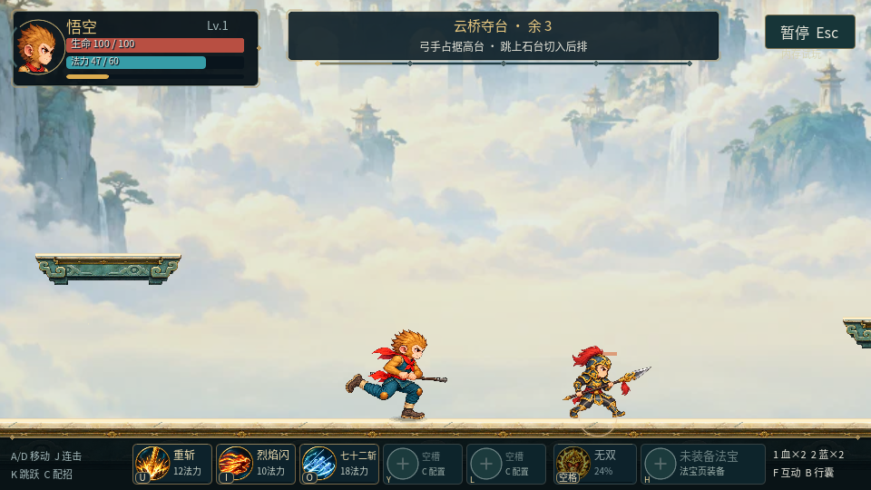
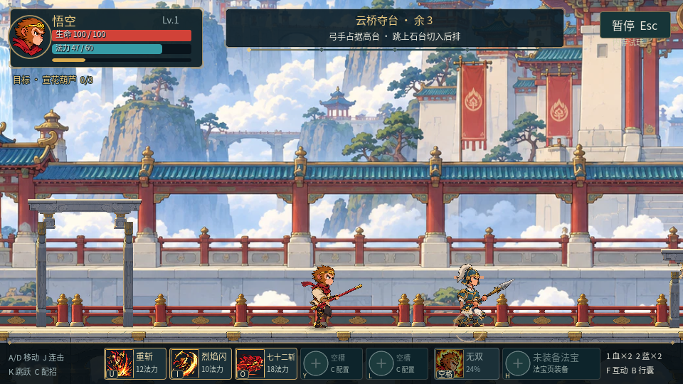
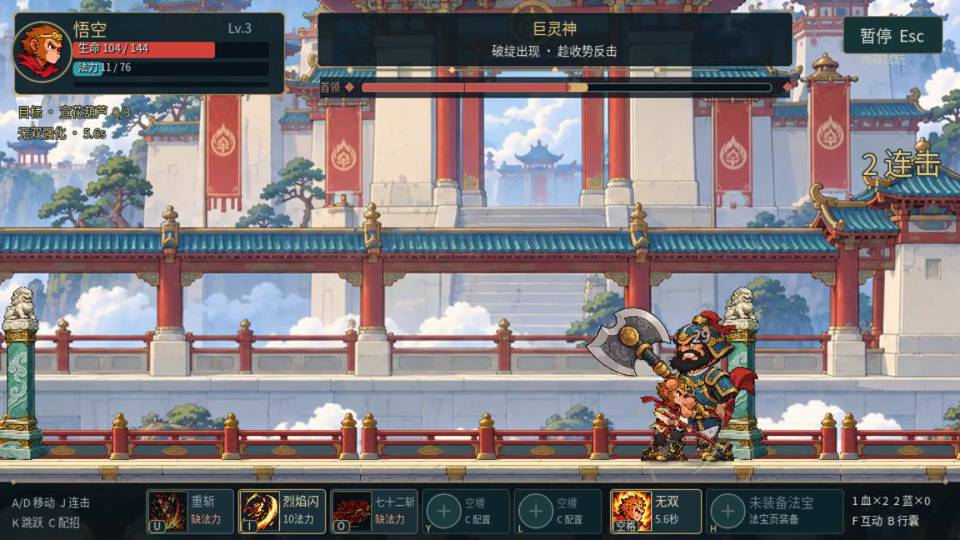
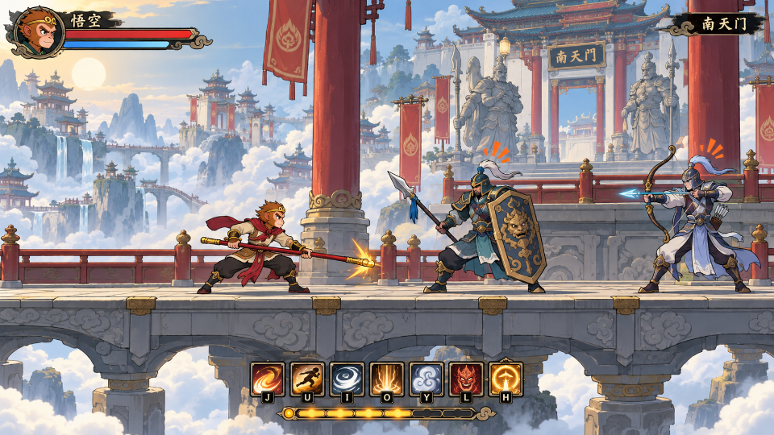
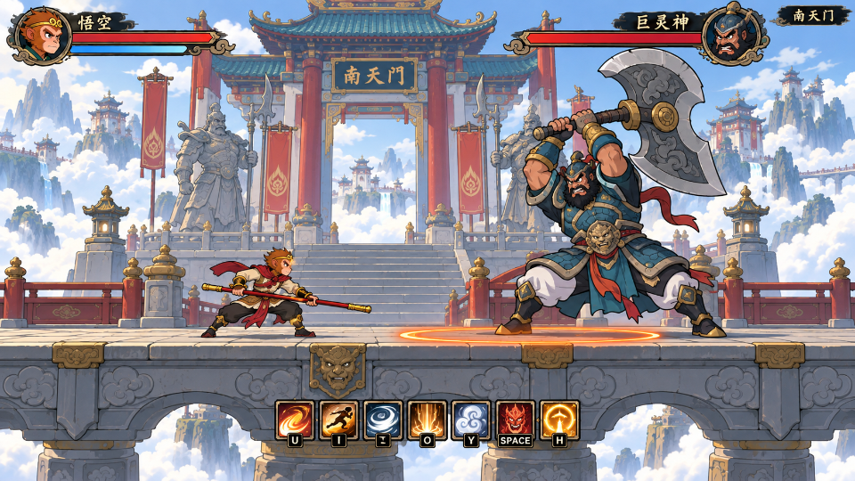

再闯南天门
同一套人物造型的跑跳与挥棒，完整隐院，以及有目标的刷装、炼宝和捕宠。
试玩使用内存进度，不覆盖正式存档。A/D 移动，J 连击，K 二段跳，U/I/O/Y/L 技能，空格无双，H 法宝，F 互动。
实机前后

R3 实机
R4 实机 · 相同战斗视口，场景与角色更新
连续动作
基础 / 镇岳 / 青霄使用同一套骨架。动作试玩中按 1、2、3 切换衣装，Tab 切换手动，R 重播。
这次回来刷什么
征途页追踪葫芦或伞。每次有效挑战获得一件目标材料，第 3、5 次补缺；葫芦路线需要先清隐院。三件材料可选择具体个体炼制，同种法宝可以比较、换用。
隐院有两波守卫。清院后可能遇到灵猴，连续未遇两次后下次必出；捕捉每次消耗 100 灵魂与 20 法力，连续两次有效失败后第三次成功。未捕获的发现记录与满包的目标奖励都会保留。
完整流程验证
自动键盘输入完成主路、隐院、巨灵神与结算。它用于检查流程和连续画面，不代表真人首次通关时长。
已确认的美术目标图

普通遭遇概念目标
巨灵神概念目标概念图用于确定方向；上方实机截图和动作试玩展示实际实现。